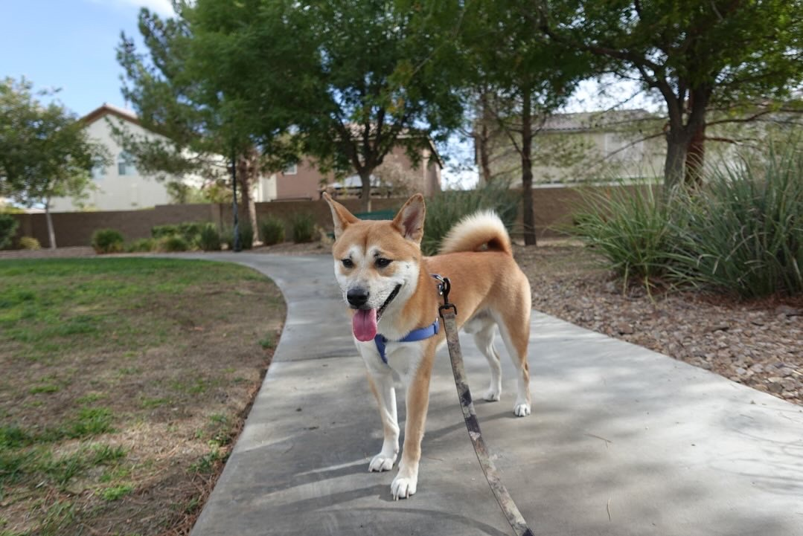
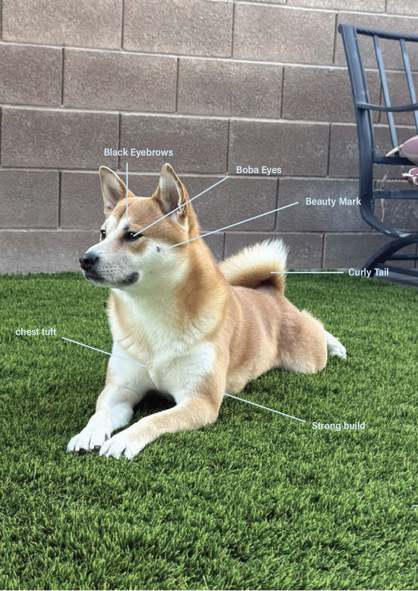
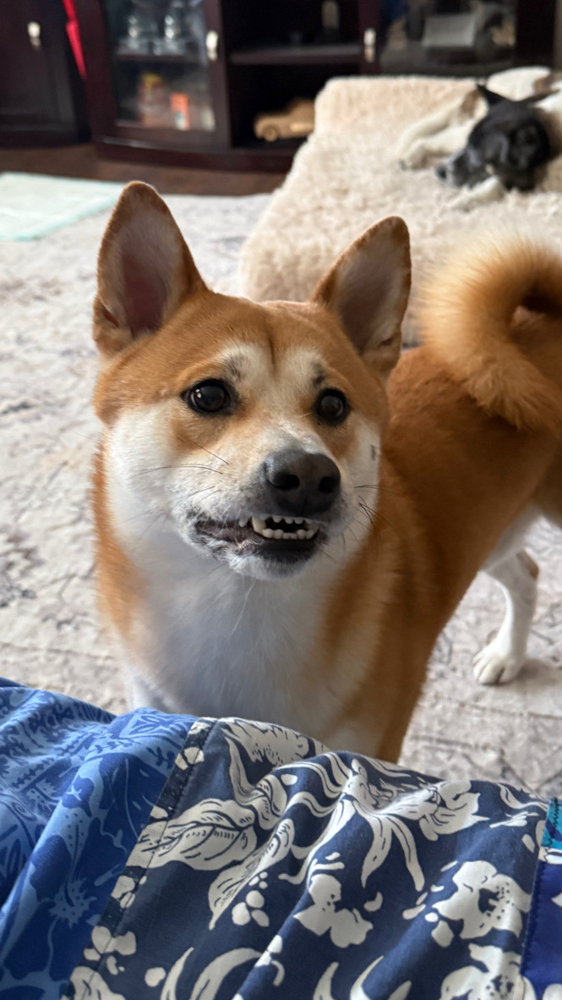

About Koa

Who is Koa?
Makoa Kuuaki or more commonly known as Koa is a 3 year old Shiba Inu. He was born on February 15th 2023, and adopted in May 2023. Koa is a widly energetic and playful Shiba Inu with a slim figure. He is a dog of many names, which he chooses to only selectively respond too.
The Physical Characteristics of Koa

To the untrained eye, koa could be confused with any other shiba inu. Although a true Koa lover can easily distinguish him in a crowd of other Shibas. Some defining characteristics that you can use to identify koa:
- large beauty mark on the right side of his face
- large brown eyes (aka boba eyes)
- two small black eye brows
- small tuft in the center of his chest
- 35lbs and a slim build
- curly tail that sometimes rests half curled on his back
- golden fur
- line down the center of his snout
The Immense Personality Koa

Koa's unique personality is what makes him different than any other dog and how he has touched so many hearts in his little life. He is a very spirited dog who has blossomed into a unique personality as he has grown from puppy to grown. Some of the unique attributes that make up our beloved koa consits of:
- Inquisitive, Koa is extremely curious always pushing open doors or bags just to get a look at what you could be doing
- Compassionate, whether you are happy or sad Koa will happily be there to experience those emotions with you and brighten the moment with kisses hugs
- Fearful, as inquisitive as Koa is he is very fearful often being scared of the tiniest noises or movements such as a box falling or the doorbell ringing
- Persistant, Koa is incredibly persistant often times making him struggle to take no for an answer. Once he sets his mind to something it is very difficult to stop him.
- Talkative, Koa is one of the most talkative dogs in the world when he wants to be. He will ensure you are aware of his presence especially when he wants something from you.
- Spirited, Koa is a spirited pup who literally can jump to your shoulders whether it be in annoyance or in joy. That is just the endless bundle of spirt and energy that makes up his little body